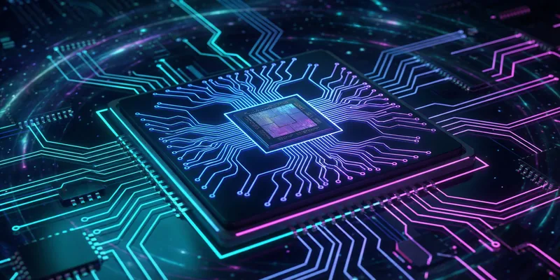
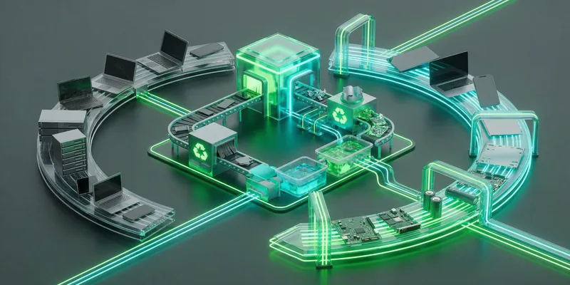

The current discussion around Windows 11 and its hardware requirements often misses the bigger picture. This isn't about a "malicious update" from Microsoft—it's about a fundamental question that many companies are ignoring: How do we plan our IT infrastructure for the future?
0. The Date the Whole Debate Turns On
Before any of the arguments below matter, the calendar does. Windows 10 reached end of support on 14 October 2025. No technical support, no feature updates, no quality or security updates.
If you need more time, the paid Extended Security Updates (ESU) program is the bridge. What it actually is:
- Critical and Important security updates only — no new features, no non-security fixes, no general technical support.
- Devices must run Windows 10 version 22H2 with the required licensing preparation updates installed.
- Sold per year and cumulative — buying Year Two means paying for Year One too — for a maximum of three years, running to October 2028. Year One coverage runs through 13 October 2026.
- Windows 10 Long Term Servicing releases (LTSB/LTSC) have their own lifecycles and are not covered by the Windows 10 ESU program.
ESU is a bridge, not a plan. If your answer to Windows 11 is "we'll buy another ESU year", you have deferred the decision, paid for the privilege, and still have to make it.
1. The AI Revolution: Why Old Hardware Is No Longer Enough
This is the point many overlook: the future of productivity is local. Not in the cloud, but on the device itself. Microsoft and Apple are investing heavily in local AI processing, and this requires hardware that didn't exist five years ago.

Copilot+ PCs require a Neural Processing Unit (NPU) with at least 40+ TOPS (Tera Operations Per Second). But the NPU is only one of four criteria, and it is not the one that fails your fleet: a Copilot+ PC needs a 40 TOPS NPU, 16 GB RAM, 8 logical processors and 256 GB of storage. Recall goes further and requires a device meeting the Secured-core standard, Device Encryption or BitLocker turned on, and enrolment in Windows Hello Enhanced Sign-in Security with at least one biometric option. Check the RAM floor first — that is what disqualifies most corporate laptops, not the missing NPU.
One correction to the usual framing while we are here: Copilot+ hardware is required for most Windows AI APIs, not all of them. A growing number — Phi Silica on GPU, Speech Recognition, Video Super Resolution — also run on non-Copilot+ Windows 11 PCs, and neither Foundry Local nor Windows ML requires Copilot+ at all. It is a tiered fallback, not a cliff edge. Companies without Copilot+ hardware get less, not nothing.
It's a similar story on the Apple side: Apple Intelligence only works on Macs with Apple Silicon (M-series chips). A 2015 MacBook Pro? Not compatible. A 2018 MacBook Air? Also not compatible. The hardware requirements aren't arbitrary; they are a direct consequence of software evolution.
In concrete terms, a company still working on 5-7 year-old devices today won't just be "outdated" in 2-3 years—it will be cut off from modern productivity tools. This isn't a technical problem; it's an economic problem.
2. The Lifecycle Isn't Optional—Hardware Modernization is a Business Necessity
Here comes the uncomfortable truth: a regular hardware lifecycle isn't something you can just "optimize." It's a necessity.
Many companies confuse two different things:
- Software Updates (can run on old hardware for a long time)
- Hardware Modernization (is a separate, necessary investment)
German depreciation tables (AfA) set a useful life for tax purposes. Careful here: that is a tax figure, not a statement about how long a device stays fit for work — the two are related but not the same thing, and treating them as identical is a weak argument that a CFO will take apart. What I do observe in practice is that a business laptop stops being economical somewhere in years three to five, for reasons that have nothing to do with tax law:
- Wear and Tear: Batteries degrade, hard drives age, components slow down.
- Security Vulnerabilities: Older hardware cannot support modern security features.
- Compatibility: New software requires new hardware features.
- Energy Efficiency: Older devices consume significantly more power.
A company that says, "Our 7-year-old PCs are still running," is ignoring several problems at once:
- These devices are a security risk.
- They are energetically inefficient (higher electricity costs).
- They cannot support modern features.
- Productivity is impaired (slow devices = slow employees).
The fault doesn't lie with Microsoft or Apple. The fault lies in the assumption that hardware can run "forever" as long as the software is kept up to date.
3. TPM 2.0: Why Security Isn't Optional for SMBs Either
This is where it gets serious: SMBs are no less a target for hackers than large corporations. On the contrary, they are often a preferred target because they have fewer security measures in place.

TPM 2.0 (Trusted Platform Module) is not a Microsoft invention to sell hardware. It is a hardware security module that:
- Securely stores encryption keys—not in RAM, but in isolated hardware. A key stored in a TPM with a non-exportable property truly cannot leave the TPM.
- Makes boot tampering provable—a TPM does not prevent firmware attacks by itself. It measures the boot chain and stores those measurements, so Device Health Attestation and BitLocker can detect that something changed. The controls that actually block low-level manipulation are UEFI Secure Boot and virtualization-based security; the TPM is what makes the tampering evident.
- Strengthens credential protection—with an important caveat, see below.
- Makes BitLocker practical—BitLocker runs without a TPM too. Microsoft's requirement: for BitLocker to use the system integrity check a TPM provides, the device needs TPM 1.2 or later; without a TPM, saving a startup key on a removable drive is mandatory. So the TPM buys you transparent unlock and boot-integrity checking, not encryption as such.
Now the caveat, because this is where I have heard the argument made badly — including by me, in the first version of this post. Windows Hello and Windows Hello for Business do not require a TPM. Microsoft's own TPM feature matrix lists "TPM Required: No" for both, and supports TPM 1.2 as well as 2.0. Where the TPM is absent or nonfunctional, Windows Hello for Business provisions using software-protected keys; you can force hardware-only provisioning with the Use a hardware security device policy, but that is a choice you make, not a hardware fact. TPM 2.0 is recommended over 1.2 for performance and security, and Windows Hello as a FIDO platform authenticator uses TPM 2.0 for key storage.
Same correction for credential theft. The feature that stops credentials being lifted out of memory is Credential Guard, which is virtualization-based and — per the same matrix — also has "TPM Required: No" and works with TPM 1.2 or 2.0. What TPM 2.0 does is make Credential Guard's enhanced protection easy to switch on by default: paired with System Guard, TPM 2.0 provides enhanced security for Credential Guard, and Windows 11 requires TPM 2.0 by default precisely to make that enablement easier.
So the honest version of the phishing example: an employee opens a phishing email and a trojan lands. What keeps that trojan from harvesting cached credentials is Credential Guard, running on a machine where virtualization-based security is on. TPM 2.0 is the reason that configuration is the default instead of a project. Credit the right control — a reader who thinks a TPM chip alone solves credential theft will make a bad decision with it.
Credential theft and ransomware dominate what I see hitting small companies. Both get materially harder on a machine with TPM 2.0, virtualization-based security on by default, and disk encryption that unlocks transparently. That is not "profiteering" by Microsoft — it is the baseline the current threat landscape assumes.
4. macOS as an Alternative—But with Realistic Limits
Here's an honest answer: Yes, macOS could be an option for certain companies. And yes, the hardware lifecycle is longer than with Windows.
What I see on the macOS side — and these are observations from the fleets I look after plus Apple's own support pages, not figures Microsoft publishes:
- Apple tends to carry a Mac through operating system updates for roughly 6-7 years, with a tail of security updates after that.
- Careful with the comparison, though: that is Apple's OS support for a piece of hardware, whereas the 3-5 years I use for Windows is a replacement cycle. They are not the same measurement. Windows 11 has its own documented lifecycle per release, independent of how old the device is.
For whom is macOS an option?
- Design Agencies (Adobe Suite, Final Cut Pro)
- Software Development (Unix-based, better developer tools)
- Creative Industries (video, graphics, music)
- Certain Office-focused industries (with Microsoft Office for Mac)
But here's the reality: a 7-year-old Mac is no longer "current." And this is where it becomes problematic:
- Apple Intelligence only works on M-series chips (2020+).
- New security features are often not available on older Macs.
- Performance degradation is real—a 2017 MacBook Pro is noticeably slower today.
- Compatibility with new software becomes an issue.
A company that says, "We buy Macs because they last longer," is making a mistake. They last longer, but not forever. And after 5-7 years, a Mac is just as "obsolete" as a Windows PC—just with a longer transition period.
5. Why Linux Isn't the Simple Solution—The Uncomfortable Truth
In the comments on the Windows 11 debate, the same suggestion always comes up: "Just switch to Linux!" It's tempting, but it's also unrealistic for most SMBs.
The reality of Linux in business:
User Experience & Learning Curve
Linux is not Windows. That sounds obvious, but it's the core problem. An employee who has used Windows for 20 years can't just switch to Linux and have it "just work." The operation is different, the workflows are different, and the troubleshooting processes are different.
In the migrations I have been close to, non-technical users need something in the order of three to six months before they are back to their old speed. I have no study to hand you for that number — treat it as my experience, not a benchmark. Either way, it is not just training time; it is reduced productivity during the transition.
Change Management is Underestimated
Companies massively underestimate how difficult it is to migrate 50+ employees from Windows to Linux. This isn't just an OS update—it's a cultural change.
- Employees want their familiar tools (Outlook, Teams, Excel—which work differently on Linux).
- IT support needs to be retrained.
- Business processes need to be reviewed.
- Compatibility with legacy software becomes a problem.
Software Compatibility
Yes, LibreOffice is free. But it's not Microsoft Office. Yes, Thunderbird works. But it's not Outlook. And yes, there are Linux alternatives for almost everything—but they are not identical.
For a company that uses Microsoft 365, switching to Linux is also a switch from native applications to web versions. It works, but it's not the same experience. One fair counterpoint: Intune supports Linux desktops for compliance policies and Conditional Access, so a Linux fleet is no longer automatically unmanaged from a Microsoft 365 perspective. That weakens the management argument against Linux — it does not fix the application one.
Support & Expertise
An SMB with 2 IT employees probably has Windows expertise. Linux expertise is more expensive and harder to find. This is a real business risk.
Conclusion on Linux: It's a great solution for specific use cases (servers, development, specialized workstations). But for the standard office workstation in an SMB, it's not the answer to the Windows 11 question. The switch costs more, takes longer, and creates new problems.
6. What to Do with Old Hardware—Practical Solutions
Okay, so old hardware doesn't have to go in the trash. There are sensible alternatives.

Refurbishing & Second-Life Programs
There are specialized companies that professionally refurbish old IT hardware and bring it back to the market. This means:
- Professional data destruction (GDPR-compliant).
- Hardware testing and repair.
- Resale to companies that need affordable hardware.
- Certification for quality and security.
This isn't just "selling old devices"—it's a structured process that recovers value and reduces electronic waste.
Donations to Schools & Nonprofits
Many schools and non-profit organizations need hardware. A 5-year-old laptop is still valuable to a school. There are programs that organize these donations and make them tax-deductible.
Internal Reuse
An old laptop can be:
- A test device for new software deployments.
- A backup workstation for emergencies.
- Used for a specialized function (e.g., as a kiosk system).
- Training material for new IT staff.
Upcycling for Specific Tasks
A 7-year-old PC is too slow for office work. But it could be perfect for:
- A print server (doesn't need much power).
- A backup system (runs in the background).
- A monitoring workstation (displays dashboards).
- A network appliance (with Linux as a lightweight OS).
Sustainable Disposal
If hardware is truly no longer usable, there are certified e-waste recyclers that recycle hardware in an environmentally friendly way and recover valuable materials.
The important thing: Simply storing old hardware and hoping it still works is not a strategy. But there are structured, sustainable ways to deal with it.
The Real Question: Who is Responsible?
The Windows 11 debate distracts from the real question: Why don't German companies have a structured hardware lifecycle?
This isn't Microsoft's fault. It's not Apple's fault. It's a management decision.
A company that:
- ✅ Regularly renews hardware (3-5 year cycle)
- ✅ Takes security seriously (TPM 2.0, encryption, MFA)
- ✅ Invests in modern infrastructure
- ✅ Prioritizes employee productivity
...has no problem with Windows 11. And it benefits from AI features, better security, and higher productivity.
A company that:
- ❌ Uses hardware until it fails
- ❌ Sees security as a "later problem"
- ❌ Invests in old infrastructure
- ❌ Frustrates employees with slow devices
...will always have a problem with the next OS update. And it will be more vulnerable to cyberattacks.
The Way Forward: Strategic, Not Emotional
The answer to the Windows 11 question is not "We're switching to Linux" or "We're ignoring it." The answer is:
- Establish a hardware lifecycle—in my practice, 3-5 years for Windows and 5-7 for macOS, depending on the use case. Those are working figures, not vendor requirements; pick yours and write it down.
- Understand security as a business requirement—not a cost factor.
- Use modern features—AI, security, and productivity are not optional.
- Sustainably manage old hardware—refurbishing, donations, upcycling.
- Regularly review—What's working? What's not? Where are the security risks?
This isn't revolutionary. This is standard practice in modern companies — and the numbers happen to land close to what the AfA tables assume for tax purposes, which makes the budget conversation easier even though the two are answering different questions.
The Windows 11 debate is less of a tech scandal and more of a wake-up call for companies to take their IT strategy seriously.
👇 What does your hardware lifecycle look like? Planned—or based on the principle of "it'll probably be fine"?
♻️ Share & Follow for honest insights into digitalization beyond the buzzwords.
Zero Trust. Zero Drama. Zero Bullshit.
Learn more: https://easym365.de
References
- Microsoft Learn: Copilot+ PC Requirements - Neural Processing Unit (NPU) 40+ TOPS
- Microsoft Learn: Windows Lifecycle FAQ - Windows 10 end of support, 14 October 2025
- Microsoft Learn: Extended Security Updates (ESU) program for Windows 10
- Microsoft Learn: TPM recommendations - TPM and Windows Features matrix
- Microsoft Learn: Manage Recall - Copilot+ PC and Recall system requirements
- Apple: Apple Intelligence System Requirements - M-Chip Compatibility
- Stripe: How businesses in Germany can correctly depreciate assets (AfA) — tax guidance, not a hardware lifecycle source
- Microsoft: Endpoint Security for Small and Mid-Sized Businesses
- Palo Alto Networks: SMB Cybersecurity Threats and Targeting Patterns — vendor research, not a Microsoft figure
- MacRumors Forums: Rules for Mac OS Dropping Hardware Support — community thread, indicative only
- Intego: macOS Security Updates and Support Duration
- Apple: Apple Intelligence Compatibility - M-Chip Requirement
- Built In: Enterprise Linux Management and Learning Curve — vendor-neutral article, not a study
- TechBuyer: Sustainable IT Hardware Reuse and Refurbishing
- Give It Get It: Computer Donations and Digital Inclusion Programs
- YBC: IT Asset Disposition and E-Waste Recycling